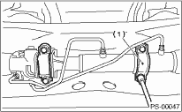
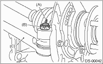

1. Insert the gearbox assembly into the crossmember, being careful not to damage the gearbox assembly boot.
2. Tighten the gearbox assembly to the crossmember bracket via clamp with bolt, and tighten to the specified torque.
Tightening torque:
60 N·m (6.1 kgf-m, 44.3 ft-lb)

|
(1) |
Clamp |
3. Connect the pipe D first to gearbox, then lower pipe C.
Tightening torque:
T: 15 N·m (1.5 kgf-m, 11.1 ft-lb)
|
(1) |
Pipe C |
|
(2) |
Pipe D |
4. Install the universal joint. 
5. Connect the tie-rod end and knuckle arm, and tighten with castle nut. Insert the cotter pin into the nut, and bend the pin to lock it.
Castle nut tightening torque:
27 N·m (2.75 kgf-m, 19.9 ft-lb)
CAUTION:
• Tighten to the specified torque, then turn further within 60° until the cotter pin hole matches the slot in the nut.
• When connecting, do not hit the cap at the bottom of tie-rod end with hammer.

|
(A) |
Cotter pin |
|
(B) |
Castle nut |
|
(C) |
Tie-rod |
6. Install the front stabilizer to vehicle.
7. Install the front exhaust pipe assembly. (Non-turbo model)
8. Install the sub frame.
9. Install the under cover.
10. Align the center position of the roll connector.
11. Install the steering wheel.
12. Install the front wheels.
13. Tighten the wheel nuts to the specified torque.
Tightening torque:
90 N·m (9.2 kgf-m, 66 ft-lb)
14. Connect the battery ground cable to the battery.
15. Pour fluid into the reservoir, and bleed the air.
16. Check for fluid leaks.
17. Install the jack-up plate.
18. Lower the vehicle.
19. Check the fluid level in the reservoir tank.
20. After adjusting toe-in and steering angle, tighten the lock nut on the tie-rod end.
Tightening torque:
83 N·m (8.5 kgf-m, 61.2 ft-lb)
NOTE:
When adjusting toe-in, hold the boot as shown to prevent it from being rotated or twisted. If it becomes twisted, straighten it.